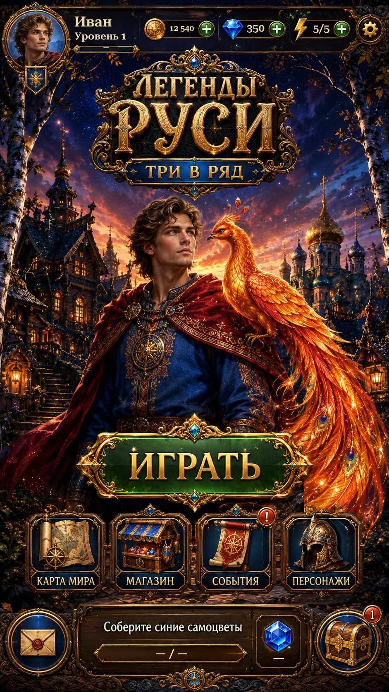

Shared player header R1Shared player header · R1
Home and World Map now use one header component for artwork, layout, typography and saved values.
Actual Unity captures; isolated test-save values. 26 targeted checks passed. Existing navigation and World Map panel highlighting retained.
